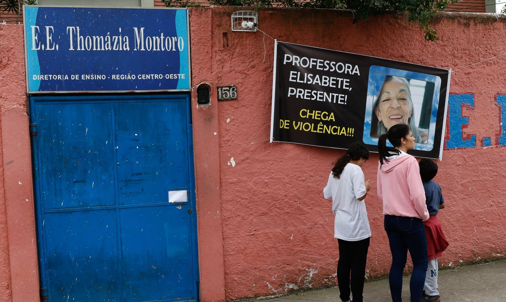

N1 EDUACAÇÃO
POLÍTICA
ESPORTE
ENTRETENIMENTO
Reforma do Novo Ensino Médio
Governo deve publicar portaria para suspender prazos de implementação do novo ensino médio
Governo deve investir em escolas em tempo integral, diz Rui Costa
Novo Ensino Médio: ajustar ou revogar? Entenda em 7 pontos o debate que envolve alunos e MEC
O que é o Novo Ensino Médio?

Violência nas escolas
Nome da estação Vila Sônia é alterado para homenagear professora morta em escola em SP
Metade dos alunos da rede pública de São Paulo diz ter sofrido violência, aponta pesquisa
Precisamos de protocolos contra atos de violência nas escolas, diz especialista
Enem
Candidato pode pedir isenção da taxa de inscrição a partir desta 2ª; veja quem está apto
Onde pedir isenção do ENEM? Saiba como e veja o cronograma
Estudante garante nota 1000 na redação do Enem com apenas um repertório